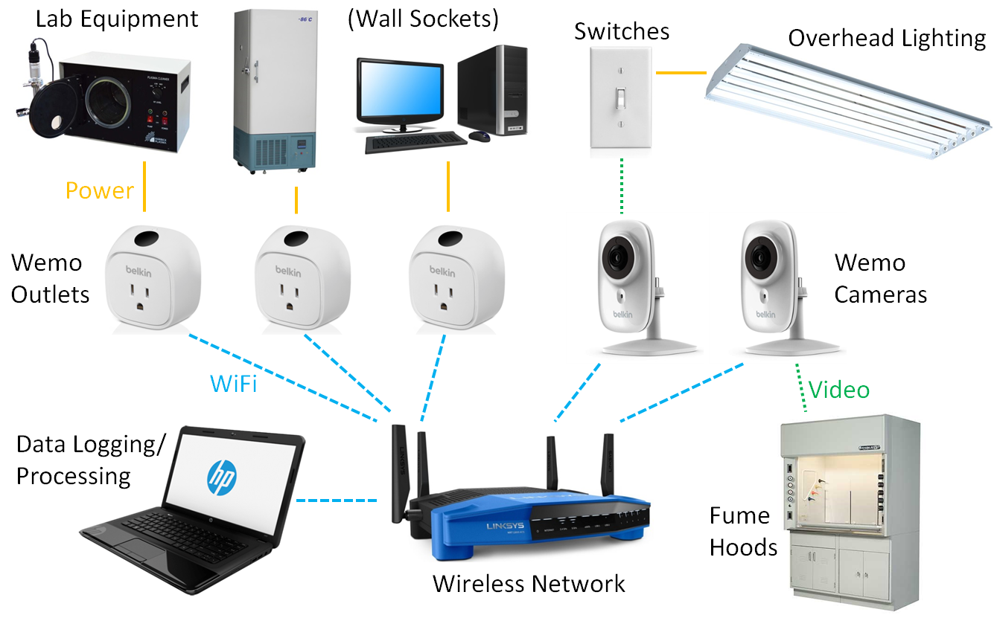
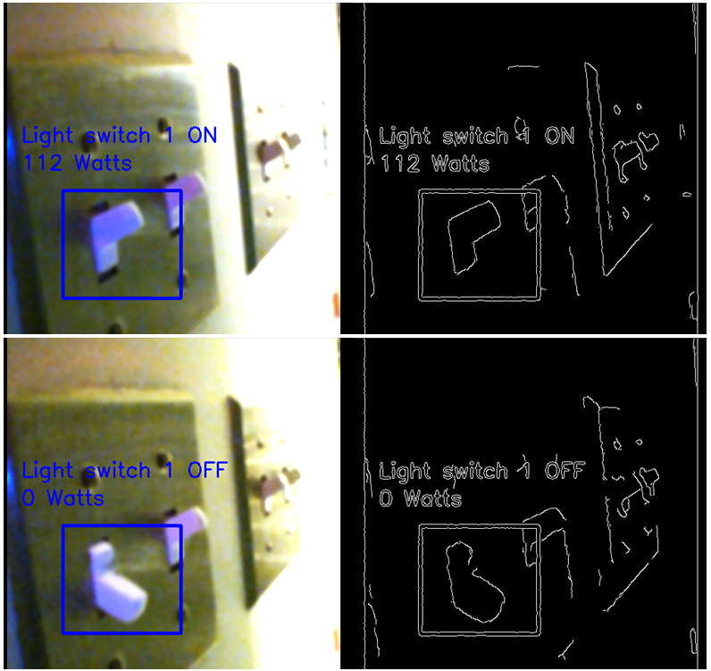
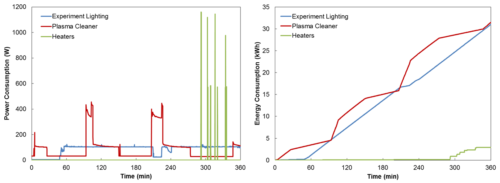

MIT DRL Green Labs Innovation Project
Submitted by Daniel J. Preston and Ariel S. Anders
On behalf of the Device Research Laboratory under the guidance of Professor Evelyn N. Wang
Executive Summary
We implemented a full-lab energy use monitoring network which is capable of providing data in real time and also logging for later analysis. We propose that this lab space be used to test the efficacy of various “green” schemes such as posting signage, appointment of a lab energy officer, or even a chime that reminds users to turn off lights as they leave. The energy monitoring system will provide quantitative results as to whether these methods lead to energy savings and which are the most effective.
Strategically Targeted Energy Conservation
We envision a test lab to determine the efficacy of different energy conservation methods, knowledge which we will disseminate to help other labs decide which measures to use. This concept of a test lab is discussed in detail in the following section; here, we describe how we have transformed the lab into an Internet of Things (IoT) where all of the energy consuming devices in the lab are monitored in real time and the data is also logged for later analysis.

Figure 1. Schematic of the fully integrated lab space with power consumption monitoring and logging. A local wireless networks connects the Wemo outlets and cameras to the data logging and processing unit. The Wemo outlets are able to directly measure power consumption of lab equipment that plugs in to wall sockets. Meanwhile, the Wemo cameras feed live video of energy consuming devices that are typically harder to log data for without intrusive hardware, such as overhead lighting and fume hoods, to the data processing unit, where custom image processing software determines the power consumption of these units in real time.
We have purchased and installed a dedicated wireless network within our lab that communicates with plug-level energy monitoring devices called Wemo switches, shown in Figure 1. These Wemo switches are plugged directly into outlets and then lab equipment is plugged into the Wemo switches where the power consumption (solid yellow lines in Figure 1) is measured; the Wemo switches then send power consumption data over the wireless network (dashed blue lines in Figure 1) to our server in real time, where the data is recorded. In addition to the live energy consumption visualization, the Wemo switches can be used to turn off lab equipment that has been left on by accident from a remote location – for example, a user could shut down a furnace that they forgot to switch off even after they have left campus and gone home. However, the Wemo switches are limited to devices which plug into wall outlets, which excludes large energy consumers such as overhead lighting and fume hoods.

Figure 2. Image processing of a live video stream of a panel of light switches. The method was tested in every configuration of switches and had a 100% success rate.
We were particularly interested in monitoring the energy consumed by these devices because it is very easy to save energy without changing lab operation; for example, while an experiment may always need to use a certain amount of energy to achieve a desired result, simply shutting the fume hood sash and turning off the lights when leaving the room is not an inconvenience and saves a large amount of power (~4 kW savings when closing the fume hood and ~1 kW savings when turning off all of the overhead lights). Unfortunately, it is difficult to monitor the energy consumption of these devices without significant maintenance for new instrumentation installation, and in some cases (like overhead lighting), MIT Facilities is not currently offering this service. Therefore, we took energy monitoring into our own hands and installed Wemo cameras on our wireless network. These cameras can record live video of things like light switches (dashed green line in Figure 1). Live video of light switches is useful because it contains the data that shows whether the lights are on or off. Humans can easily look at a video of a light switch and determine whether it is on (up) or off (down). It is not quite so easy for computers to do this, but we wrote custom image processing software that is able to look at the light switches through the camera video feed and determine whether they are on or off, shown in Figure 2. Then, by telling the computer which switches control which lights and also recording the wattage off of the light bulbs (which is within ±15% of the real power consumption depending on the ballast factor), we are able to log how much power is being consumed by overhead lighting in real time. A similar image processing method is used for fume hoods, either by observing the energy consumption gage on their flow meters or by observing the status (open/closed) of the sash.
With the system installed and running in our lab, we began to gather data. The data recorded during an actual experiment in the lab is presented in Figure 3. This experiment consisted of three main energy consuming devices: light to visualize a sample, a plasma cleaner to clean the sample, and a heater. We see in the power consumption plot (left) that the heaters require the most power by far at over 1,000 W. The plasma cleaner requires just under half of that, around 400 W, and the lighting requires only about 100 W. However, when we integrate the data to determine the actual total energy used, we find that the heaters consumed less than 10% of the energy. The lighting and plasma cleaner consumed about the same amount of energy, 30 kWh.

Figure 3. Data logging during a typical experiment in the lab that consisted of lighting to visualize a sample (blue), plasma cleaning the sample (red), and heating the sample (green). The plot on the left shows the instantaneous power consumption during the experiment over time, and the plot on the right shows the cumulative energy consumption, which is the integral of the data in the plot on the left.
This type of analysis is incredibly useful in determining what may initially be non-intuitive patterns in energy consumption. In addition, this particular case was useful because it illustrated that leaving the light on during the whole experiment even though it only needed to be on when visualizing the sample (about 5% of the total time) was consuming nearly half of the total energy used – turning off the lighting when not in use therefore reduced the energy consumption of this experimental procedure by ≈50%.
In addition to energy monitoring and analysis for particular experiments, we compiled a table of the typical energy usage for lab equipment that we have posted for labmates to refer to when designing experiments. This table, shown on the following page, was generate by using the Wemo outlets to record power consumption data.
Table 1 includes several interesting observations. First, the LED lighted power strip consumes 0.2 W of power, while an unlighted power strip consumes essentially no power. Future purchases of power strips should be made with this in mind to avoid waste. Second, the Wemo outlets themselves consumed just over 1 W of power. This is an unfortunate consequence of the vast amount of information we are able to log with the devices, but the usefulness of that information outweighs what adds up to less than the equivalent of one incandescent bulb to monitor power consumption in the entire lab, particularly in the context of the Test Lab concept described in the next section.
Table 1. Experimentally measured power consumption of lab equipment in the DRL
Lab Equipment |
Power Consumption (W) |
Unlighted Power Strip |
0.0 |
LED Lighted Power Strip |
0.2 |
Wemo Power Monitor |
1.3 |
Desktop Computer Tower |
104.8 |
Desktop Monitor |
13.2 |
Laptop Computer |
12.6 |
Lab Task Light: Low |
26.6 |
Lab Task Light: Medium |
34.6 |
Lab Task Light: High |
39.7 |
Optical Microscope Light |
59.9 |
Heat Gun: Low |
575.0 |
Heat Gun: High |
1152 |
Vacuum Pump: Startup |
506.1 |
Vacuum Pump: Steady State |
402.7 |
Hot Plate: Startup |
1021 |
Hot Plate: Steady 150 °C |
202.7 |
Hot Plate: Steady 300 °C |
317.1 |
Ultrasonicator |
25.6 |
Plasma Cleaner: Standby |
3.2 |
Plasma Cleaner: Operation |
365.9 |
Energy Conservation Best Practices Test Lab
We plan to use our fully-outfitted lab space to monitor energy consumption for nearly all of the equipment used in the lab, and we hope to eventually use this data gathering network not only for the ability to view energy consumption and remotely shut off equipment but also to test the efficacy of different methods to promote energy conservation. For example, if we hang up signs in certain areas of the lab that encourage users to shut down equipment when not in use, we can quantitatively demonstrate the effect of the signage by referring to our recorded energy consumption metrics. Therefore, this project has the potential to reveal the true efficacy of signage and other typical energy conservation promotion schemes by looking at the before-and-after energy consumption. If we are able to utilize the quantitative energy use measurements to determine the efficacy of signage and other typical “green awareness” schemes, we could show whether these schemes are effective and also which methods are best – for example, what if posting signs is simply a waste of paper and doesn’t result in any less consumption? What if the best method to promote sustainability is actually a weekly email or voting for a lab advocate? We hope to find out, potentially as collaboration with experts in psychology or human behavior studies, which we plan to organize as a part of the Green Labs innovation award initiative.